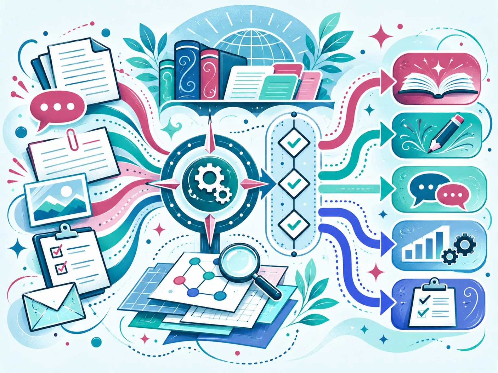
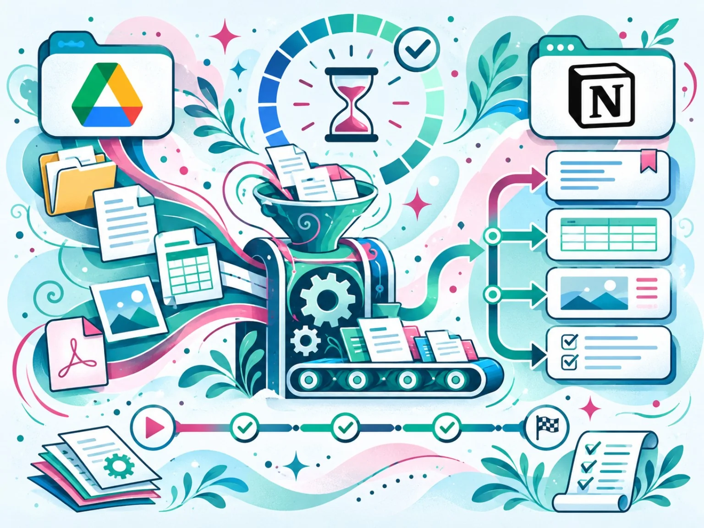
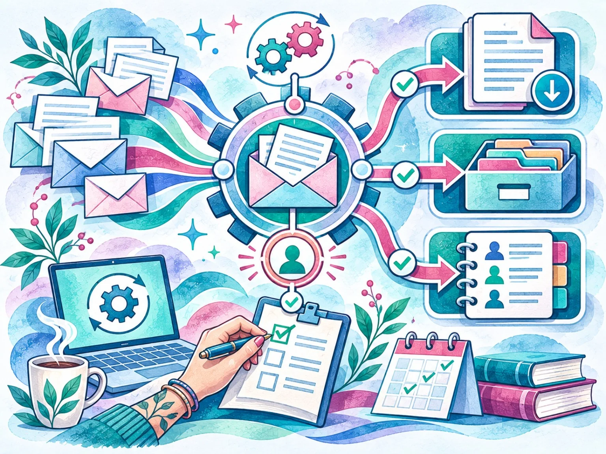
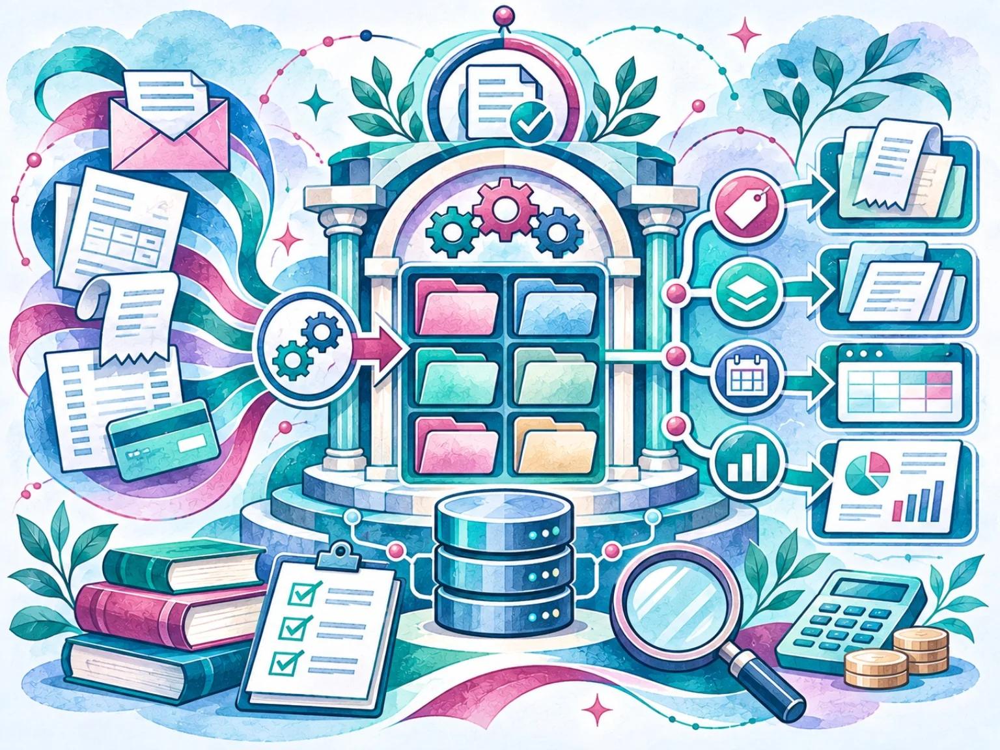
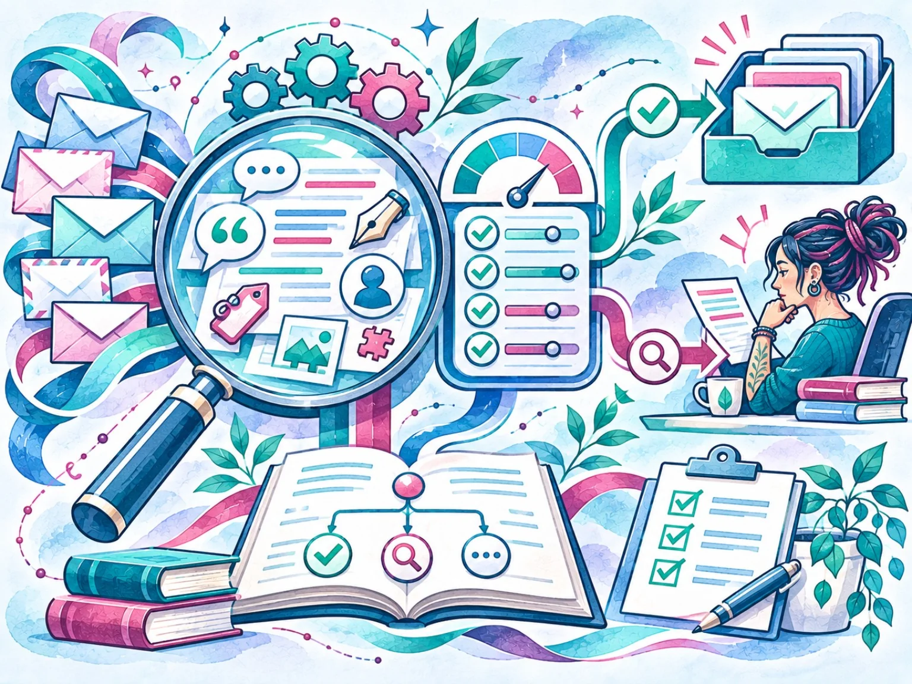
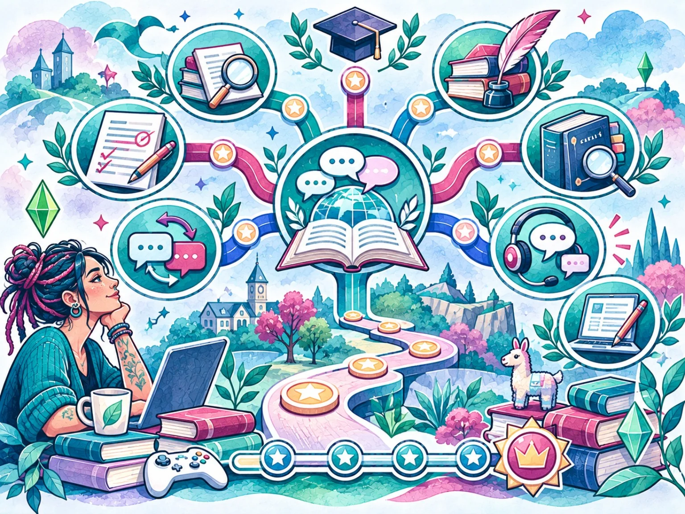

Instruction architecture & prompt design
Reusable rules, reference files, task-specific templates and conditional pathways that make requirements explicit.
Exploring how linguistic judgment, explicit instructions and practical technology can make complex workflows more structured, traceable and useful.
I bring a linguist’s attention to meaning, context and consistency to the design of AI-assisted workflows, information systems and practical automations. My technical projects explore how instructions, documents, data and everyday processes can be made more structured, traceable and useful.
This work complements my professional practice in English-to-Canadian French translation and localization, editing, comparative revision, terminology, machine translation post-editing and linguistic quality assurance. The same systems-level perspective that helps me manage meaning across a text also informs the way I define rules, organize information, connect tools and review outputs.
The projects featured here are independent, internal or applied initiatives—not a catalogue of commercial software products or a record of commercial AI-model evaluation assignments. Each project is presented according to its documented scope and status, with limitations kept visible.
A linguist’s approach to instructions, quality and connected workflows.
Reusable rules, reference files, task-specific templates and conditional pathways that make requirements explicit.
Comparative revision, terminology, guideline-based review, MTPE and LQA applied to accuracy, consistency and context.
Content extraction, structured records, API connections, source traceability and human review.
Interfaces, data structures and software architectures shaped around practical information needs.
Reusable editorial conventions for voice, register, tone and format, with human editorial approval.
Clarify the intended use, audience, source material, language requirements, expected output and boundaries.
Separate reusable rules, reference material, terminology, routing logic, records and task-specific templates.
Specify what must be checked against source material and where unsupported inference must be avoided.
Check outputs against relevant criteria and retain human review wherever judgment or confirmation matters.
These projects illustrate applied problem-solving and ongoing technical practice. They vary in scope and maturity; their descriptions distinguish operational use, demonstrated components, architectural exploration and published work.
A modular instruction system for guiding AI-assisted writing across five distinct registers. It combines central instructions, specialized references, stylistic constraints and safeguards against unsupported personal details, while keeping final editorial approval with the author.
Status: Iteratively refined through practical use and qualitative review; no controlled benchmark or quantified improvement is claimed.
Explore the case study ↗
A source-grounded analytical workflow that checks cases against a project-defined reference matrix, then routes requests to task-specific modules and output templates. Explicit evidence requirements make complex analyses easier to review.
Status: Refined through qualitative use; this literary and analytical workflow is not a clinically validated diagnostic system.
Explore the case study ↗
A Google Apps Script pipeline that extracts text from supported Drive documents, creates structured Notion pages and preserves links to source files. Batch processing, timed resumption and execution logs help manage runtime limits and investigate errors.
Status: Used operationally for approximately eight months. Image OCR and duplicate detection were outside the documented scope.
Explore the case study ↗
An independent Google Workspace application connecting email categorization, PDF generation, document archiving and structured contact records across Gmail, Drive and Sheets, with human confirmation available when message handling needs review.
Status: Several components have been demonstrated; end-to-end validation and synchronization checks remain outstanding.
Explore the case study ↗
A software-development initiative exploring how financial information received through Gmail could be organized in one data-backed workspace. Its documented architecture includes React and TypeScript, Node.js and Express, and PostgreSQL, with concepts for search, document management, structured records and export.
Status: Advanced development and architecture exploration; the latest reference implementation was not successfully deployed to Google Cloud.
Explore the case study ↗
Turning linguistic clues into a rule-based email-triage workflow
A personal Gmail workflow translating recurring linguistic, contextual and sender-related observations into explicit rules, regular expressions and a weighted score for first-pass review of unsolicited messages.
Status: A documented V3 script exists; deployment details and a separately documented alias correction require confirmation. The score is heuristic—not proof of fraud, intent or AI authorship.
Explore the case study ↗
A custom career system bringing language-related professions into The Sims 4. It combines seven career tracks and 34 job positions with progression rules, specialized tasks, schedules, rewards, interactions and in-game text, implemented through XML resources and Python scripting.
Status: Published and tested in-game by its creator before publication; current compatibility across game versions is not established.
Explore the case study ↗An operational setup connecting bookkeeping with recurring administrative processes. The work included implementing QuickBooks Online, QR-based employee time tracking with Clockify and Make, employee-reviewed time reports and structured daily sales-report processing.
Status: Used operationally for approximately two years. Time tracking supported payroll preparation; payroll itself was not automated. No quantified time savings are claimed.
Explore the case study ↗My applied toolkit includes HTML/CSS, JavaScript, Python, Google Apps Script, REST APIs, Make and document automation. Project-specific work has also involved React, TypeScript, Node.js, Express, PostgreSQL, XML, Google Workspace and integrations with Notion. I have basic familiarity with Doccano, Argilla and Label Studio.
I describe tools in the context in which I have used or explored them; listing a technology does not imply expert-level proficiency in every component or production deployment experience.
My work with language technology is grounded in professional experience in English-to-Canadian French translation and localization, comparative revision, machine translation post-editing, terminology and linguistic QA. I am accustomed to working with explicit guidelines, project glossaries, translation memories, interface limits and specialized content.
These skills provide a practical foundation for examining language data and AI-generated language against contextual, linguistic and task-specific criteria. I am interested in opportunities involving AI language evaluation, language-data quality and structured review workflows, while distinguishing this developing area from my established commercial language-services experience.
If your team is exploring language evaluation, instruction design, document processing or a more structured content workflow, share the task, source materials, language requirements, expected output and review criteria. I can help assess where linguistic judgment, explicit instructions and practical automation may be useful.
Get in touch ↗